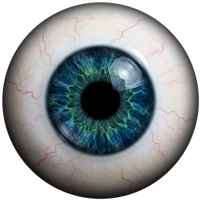

VoiceEye Remote
🟢 PC接続OK
00:00
●
録音開始
📁 音声選択
⏳ PCへ送信して文字起こし＆議事録作成中...
✨ 議事録
📝 全文
📂 履歴
⌚ Watch
📘 まとめGoogleドキュメントを開く
📄 個別ドキュメントを開く
最新の議事録
📋 コピー
📤 共有
ここに完成した議事録が自動で返ってきます。
タイムスタンプ付き全文
📋 全文コピー
ここに文字起こし全文が表示されます。
読み込み中...
⌚ Apple Watch 画面イメージ（実際にボタンを押して操作できます）
● VoiceEye
09:00
🎙️ Watch手元録音
💻 PC録音 開始/停止
📖
最新議事録：
タップまたはクラウンを回して最新の要約を手首で確認できます。
⌚ Apple Watch ショートカット設定手順（2ブロックだけ！）
【パターンA：Apple Watch単体で手元録音 → 自動でPCへ送信】
1. 下のボタンで
「① Watch録音送信用URL（4G/5G・出先対応）」
をコピーします。
📋 ① Watch録音送信用URLをコピー
2. iPhoneの純正
「ショートカット」アプリ
を開き、右上の「
＋
」を押します。
3.
アクションを追加①
：検索で
「オーディオを録音」
を追加します。
4.
アクションを追加②
：検索で
「URLの内容を取得」
を追加し、以下に設定します：
・
URL
：手順1でコピーしたURL（
https://script.google.com/...
）を貼り付け
・
方法（Method）
：
POST
に変更
・
リクエスト本文
：
ファイル
に変更
・
ファイル
：
録音したオーディオ
を選択
5. 下の
「ⓘ（情報）」アイコン ＞「Apple Watchに表示」をON
にすれば完了！文字盤（コンプリケーション）にも配置できます。
【パターンB：WatchからPCの録音を1タップで開始/停止】
ショートカットに
「URLの内容を取得」
1個だけを追加し、下のURLを貼るだけで手首からPC録音をON/OFFできます！
📋 ② PC遠隔録音スイッチURLをコピー
✨ 完了しました！